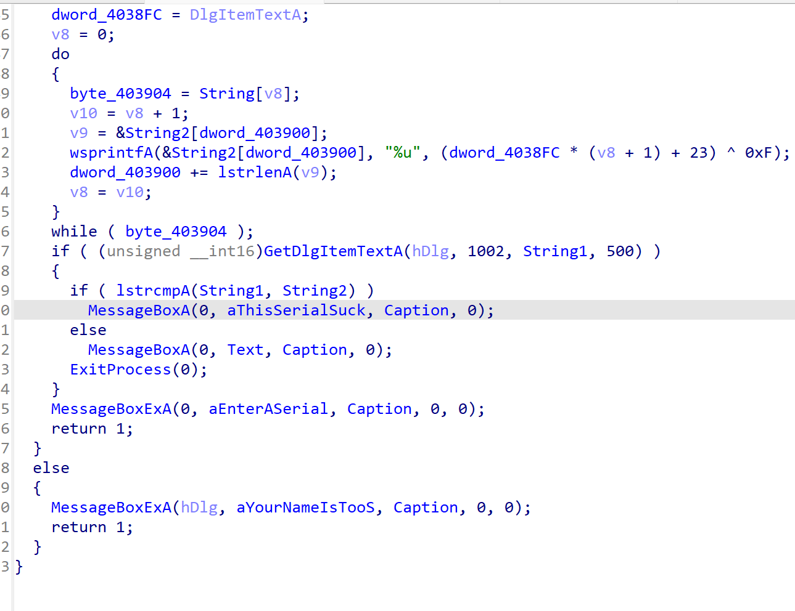

# F系列【主要是调试状态的处理】
F2 添加/删除断点
F4 运行到光标所在位置
F5 反汇编
F7 单步步入
F8 单步跳过
F9 持续运行直到输入/断点/结束
shift系列【主要是调出对应的页面】
shift+F1 Local types
shift+F2 execute scripts【常用】
shift+F3 Functions
shift+F4 Names
shift+F5 Signatures
shift+F7 Segments
shift+F8 Segments registers
shift+F9 Structures
shift+F10 Enumerations
shift+F11 Type libraries
shift+F12 Strings【常用】
Shift+E 导出数据【常用】
# 单字符系列【基本是数据处理转换相关】【这些都比较常用】
G 按地址查找
D 将字符串等元素转为数据
N 重命名（函数名、变量名等）
Y 修改变量类型等（比如int改char等等）
H decimal 数据的进制快速转换
A 将数据转变为字符串类型
C code（将数据转变为汇编代码，分为自动和强制执行）
U undefined（将字符串转变为原始数据）
X 交叉引用（反汇编页面）
P 选中位置识别为函数
# Ctrl、Alt系列
Ctrl+F 搜索【常用】
Ctrl+X 交叉引用（汇编页面）【常用】
Alt+T 查找Text
Ctrl+T 查找下一个text
Alt+C Next Code
Ctrl+D Next Data
Ctrl+Z 撤销
Ctrl+Shift+Z 恢复
Alt+K 修改堆栈值
# else
/ 添加注释 or 右键选择edit comment【常用】
\ hide cast，隐藏/显示一些变量类型注解
Ins 添加区块注释
通用寄存器
- EAX：（针对操作数和结果数据的）累加器
- EBX：（DS段的数据指针）基址寄存器
- ECX：（字符串和循环操作的）计数器
- EDX：（I/O指针）数据寄存器
- ESI：（字符串操作源指针）源变址寄存器
- EDI：（字符串操作目标指针）目的变址寄存器
- EBP：（SS段中栈内数据指针）扩展基址指针寄存器[栈帧寄存器、栈底指针寄存器]
- ESP：（SS段中栈指针）栈指针寄存器[指向栈顶]
段寄存器
- CS：代码段寄存器
- SS：栈段寄存器
- DS：数据段寄存器
- FS：数据段寄存器
- ES：附加数据寄存器
- GS：数据段寄存器
程序状态与控制寄存器
- EFLAGS：标志寄存器，32个位元的01控制
- ZF(零标志器，运算结果为0时置1)
- CF(进位标志，运算结果向最高位以上进位时置1)
- OF(溢出标志)
- AF(辅助进位标志，运算结果在第3位的时候置1)
- SF(符号标志，有符号整型的符号位为1时置1)
指令指针寄存器
- EIP / RIP：保存CPU要执行的指令地址
常用指令
操作码 目的操作数 源操作数
- PUSH/POP：压栈/出栈
- PUSHA/POPA 、 PUSHAD/POPAD
- MOV/CALL/RET/LEA/INT/EMD：传送 / 调用 / 返回 / 加载 / 中断 / 结束
- CMP/TEST：比较/测试（结果丢弃，只修改标志位寄存器）
- JMP系列跳转指令
- ADD/SUB/SHL/SHR/ROL/ROR：加 / 减 / 逻辑左移 / 逻辑右移 / 循环左移 / 循环右移
- INC/DEC ：加一 / 减一
- MUL/IMUL：无符号乘法、整数乘法
- DIV/IDIV：无符号除法、整数除法
- AND/XOR/OR/NOT：与 / 异或 / 或 / 取反
栈帧
PUSH EBP ;函数开始
MOV EBP,ESP ;将栈顶地址存入EBP中
.... ;函数执行，期间EBP地址不变
MOV ESP,EBP ;基准点地址给到ESP
POP EBP ;栈状态恢复，弹出EBP
RETN ;函
IDA常用脚本
IDC&python，具体可以看IDA的官方书籍
IDC
//获取寄存器的值
auto eax = GetRegValue("EAX");
auto addr = 0x0;
auto i = 0;
for(i; i < 10; i = i+1)
{
//打印字节
Message("%x",Byte(addr+i));
//修改字节
PatchByte(addr+i,Byte());
}
//dump数据
auto i,fp;
fp = fopen("D:\\dump2","wb");
for(i=0x10;i<0x12;i++)
fputc(Byte(i),fp);
print("end");
python
# 导入头文件
from idaapi import *
# 获取寄存器的值
espval = get_reg_val('esp')
# 获取字节值ida_bytes.get_word()
value = ida_bytes.get_word(address)
# 获取16字节长度的数据
ida_bytes.get_bytes(address, 16)
easy动态调试
思路：把不在主函数里面的函数运行下就行
EIP修改为_ques函数的地址F9运行就行，拿到Flag
ez_xor
下面是XOR的encode函数
一开始想了下a2是什么，发现就是传参
#include <stdio.h>
#include <stdlib.h>
#include <string.h>
int main(int argc, char const *argv[])
{
char flag1[] = "E`}J]OrQF[V8zV:hzpV}fVF[t";
char flag[] = "";
for (int i = 0; i < strlen(flag1); i++)
{
flag1[i] ^= 3 * 3;
printf("%s\n", flag1);
}
}
好无聊啊，想做PWN题了
XOR
这道题主要是array要看懂
\#include <stdio.h>
\#include <stdlib.h>
\#include <string.h>
int main(int argc, char const *argv[])
{
int flag1[] = {0x3FE, 0x3EB, 0x3EB, 0x3FB, 0x3E4, 0x3F6, 0x3D3, 0x3D0, 0x388, 0x3CA, 0x3EF, 0x389, 0x3CB, 0x3EF, 0x3CB, 0x388, 0x3EF, 0x3D5, 0x3D9, 0x3CB, 0x3D1, 0x3CD};
char flag[] = {};
for (int i = 0; i < 21; i++)
{
flag[i] = (flag1[i] - 900) ^ 0x34;
printf("%c", flag[i]);
}
return 0;
}
CrakeMEV3
意思是要读取一个同目录下名为CRACJME3.KEY的文件，试过如果文件名不叫这个，调试暂停
看到写在CRACKME3.KEY的字符，步进查看函数
abexcrakeme3
思路：要找一本abex.l2c文件，那就自己创建一个，下面还有两个比较跳转，直接爆破，把两个jne nop掉，秒了
cosh1.exe
第一个爆破点：把jz换成jmp，强制跳转，不用看条件
继续找，在函数头下断点，由于程序已经运行，直接按check for CD

算法：就是在各种光驱里面循环查找，找有没CD_CHECK.DAT的文件
Acid_burn
第一个serial incorrect jge改成jmp
第二个serial jnz给nop掉
秒了
算法分析：看右上角寄存器，自己输入1234放在寄存器EDX中，EAX是一段字符串，猜测明文是"CW-4018-CRACKED"
拖到IDA中分析，找CRACKED所在的函数，差不多就是下面一段
void Decryption(char* mima)
{
char szBuff[260];
unsigned long data = (unsigned long)mima[0];
data *= 0X29;
data *= 2;
sprintf(szBuff, "CW-%d-CRACKED", data);
printf("%s \r\n", szBuff);
}
fakebase
flag = 'xxxxxxxxxxxxxxxxxxx'
s_box = 'qwertyuiopasdfghjkzxcvb123456#$'
tmp = ''
for i in flag:
tmp += str(bin(ord(i)))[2:].zfill(8) # 将每个字符转换为二进制字符串，并填充到 8 位
b1 = int(tmp,2) # 将拼接后的二进制字符串转换为十进制整数
s = ''
while b1//31 != 0:
s += s_box[b1%31]# 将余数映射到 s_box 中的字符，并拼接到 s 中
b1 = b1//31
print(s)
\# s = u#k4ggia61egegzjuqz12jhfspfkay
动态调试crackme

经分析，string1和string2的子串比对，进而输出判断结果，在判断结束的地方下断点，ExitProcess(0)
XDBG调试
要求Name输入crackme
一步步直到出现This serial sucks，回过去看看和那个字段做了比较，要比较的字段就是正确的serial
一般在stramp下断点
QA:为什么在程序失败返回才能出现正确的序列号
[SWPUCTF 2021 新生赛]fakebase
flag = 'xxxxxxxxxxxxxxxxxxx'
s_box = 'qwertyuiopasdfghjkzxcvb123456#$'
tmp = ''
for i in flag:
tmp += str(bin(ord(i)))[2:].zfill(8)
b1 = int(tmp,2)
s = ''
while b1//31 != 0:
s += s_box[b1%31]
b1 = b1//31
print(s)
\# s = u#k4ggia61egegzjuqz12jhfspfkay
将flag中每个字符影射为字符集的code point, 转换为二进制, 再转换为十进制, 再转换为最低位在前的31进制,
先把s逆回去
import libnum
s="u#k4ggia61egegzjuqz12jhfspfkay"[::-1]
s_box = 'qwertyuiopasdfghjkzxcvb123456#$'
print(s)
for i in range(5):
key = i
for j in range((len(s))):
key = key *31 + s_box.index(s[j])
print(libnum.n2s(int(key)))
看着答案，想起大一高代学的辗转相除，就是欧几里得算法
扩展欧几里得算法可用于 RSA加密等领域。
假如需要求 1997 和 615 两个正整数的最大公约数,用欧几里得算法，是这样进行的：
1997 ÷ 615 = 3 (余 152)
615 ÷ 152 = 4(余7)
152 ÷ 7 = 21(余5)
7 ÷ 5 = 1 (余2)
5 ÷ 2 = 2 (余1)
2 ÷ 1 = 2 (余0)
至此，最大公约数为1
以 除数和 余数反复做除法运算，当余数为 0 时，取当前 算式除数为最大公约数，所以就得出了 1997 和 615 的最大公约数 1。
证法一
a可以表示成a = kb + r（a，b，k，r皆为正整数，且r不为0）
假设d是a,b的一个 公约数，记作d|a,d|b，即a和b都可以被d整除。
而r = a - kb，两边同时除以d，r/d=a/d-kb/d，由 等式右边可知m=r/d为整数，因此d|r
因此d也是b,a mod b的公约数。
因(a,b)和(b,a mod b)的公约数相等，则其最大公约数也相等，得证。